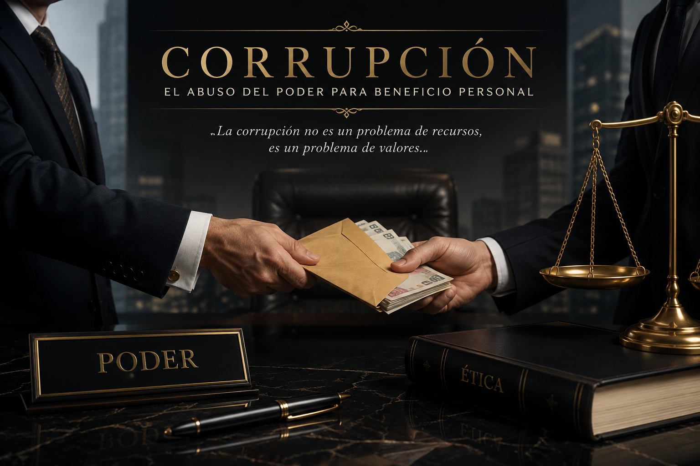

La corrupción es el uso indebido del poder, la autoridad o los recursos para obtener beneficios personales o favorecer injustamente a otras personas. Este problema puede presentarse tanto en instituciones públicas como privadas y afecta el correcto funcionamiento de la sociedad.
La palabra corrupción proviene del latín corruptio, que significa "destrucción", "alteración" o "descomposición". En la actualidad se utiliza para describir conductas deshonestas que perjudican el bienestar común.
La corrupción ha existido desde las primeras civilizaciones. En el antiguo Egipto, Grecia y Roma ya se registraban casos de funcionarios que aceptaban sobornos para tomar decisiones a favor de ciertas personas.
A lo largo de la historia, este fenómeno ha afectado gobiernos, empresas y organizaciones de todo el mundo.
La corrupción se considera uno de los principales obstáculos para el desarrollo de los países, ya que impide que los recursos lleguen a quienes realmente los necesitan. Además, genera desconfianza en las instituciones y debilita la democracia.

TIPOS DE CORRUPCIÓN
Soborno: Entregar dinero o regalos para obtener un favor.
Fraude: Engañar para conseguir beneficios económicos o personales.
Nepotismo: Favorecer a familiares o amigos con empleos o privilegios.
Malversación de fondos: Utilizar dinero público para fines personales.
Tráfico de influencias: Aprovechar relaciones personales para obtener ventajas.
Enriquecimiento ilícito: Obtener riquezas que no pueden justificarse legalmente.